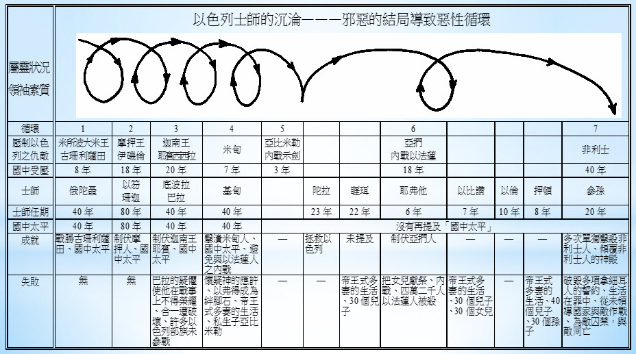

士师时期

温习 - 约书亚的征服
- 三大战役：中央（耶利哥、艾城）→南方（五王联盟）→北方（夏琐联盟）
- 土地分配：十二支派分配产业
- 未完全得胜：仍有剩余的迦南人
士师时期的外邦民族分类
| 类别 | 民族 | 特征 |
|---|---|---|
| 沿海民族 | 非利士人 (士3:31, 10:7) | 先进武器技术，沿海城邦 |
| 迦南原住民 | 摩押人、西顿人、亚扪人(士1:10, 3:5) | 剩余的迦南民族，崇拜巴力等神 |
| 北方民族 | 亚兰人 (士3:3) | 商贸发达 |
关于士师时期的圣经书本
- 士师记
- 路得记
- 撒母耳记上
士师时期的背景-社会
- 雅各的游牧家族->埃及奴隶->旷野的吗哪民族->士师时期的半游牧民族
- 科技与军事落后（撒母耳记上 13:19-23）。
- 松散的邦联（loose confederation），危机时由耶和华兴起的士师带领
士师记的大纲
- 结构分析
- 引言 (1:1-3:6): 约书亚死后，土地的分配，开始堕落
- 主体 (3:7-16:31): 十二位士师的兴起和事迹
- 附录 (17-21章): 道德和宗教的败坏
士师记中以色列人的逐渐败坏
- 士师记二9：那世代的人也都歸了自己的列祖。後來有別的世代興起，不知道耶和華，也不知道耶和華為以色列人所行的事。
- 【士三4】「留下这几族，为要试验以色列人，知道他们肯听从耶和华借摩西吩咐他们列祖的诫命不肯。」
- 离弃神－被交于外邦人的手－悔改－得拯救－离弃神。
循环模式 - 七次重复
- 叛离神 → 受管教 → 呼求神 → 蒙拯救 → 叛离神
- 每次循环都显示以色列人灵性的下滑趋势
- 士师的品格也逐渐败坏（从俄陀聂到参孙）
主要士师及其特色
- 俄陀聂 (3:7-11) - 理想的士师
- 以笏 (3:12-30) - 用计谋刺杀摩押王伊矶伦
- 底波拉 (4-5章) - 女士师并先知
- 基甸 (6-8章) - 从胆怯到得胜，最后却制造以弗得
- 耶弗他 (10:6-12:7) - 被弃的私生子，献女儿为祭
- 参孙 (13-16章) - 力大无穷却被情欲辖制
得胜的方式
- 牛棍 (3:31) - 珊迦击杀六百非利士人
- 橛与锤 (4:21) - 雅亿杀死西西拉
- 空瓶、号角与火把 (7:16) - 基甸三百勇士
- 驴腮骨 (15:15) - 参孙击杀一千非利士人
- 显示神使用软弱的器皿彰显自己的大能
士师时期的背-信仰的腐败

- 士师记21:25 - “那时以色列中没有王，各人任意而行”
- 以色列人行自己认为对，但是在神眼中为恶的事
- 认为神离弃了他们（士师记6：13）
- 被迦南人的宗教影响(syncretism)和腐败
- 例子：耶夫他献女儿为祭（士师记11章第31节）
- 拜巴力和亚舍拉
对律法的忽视
| 行为 | 经文 | 违背的律法 |
|---|---|---|
| 米迦私设神像和祭司 | 士17:5-6 | 十诫第二诫 (出20:4-5) |
| 利未人纳其他支派的妾 | 士19:1-3 | 利未人圣洁标准 (利21:7,13-14) |
| 参孙触摸狮子尸体取蜜 | 士14:8-9 | 拿细耳人条例，不可近死尸 (民6:6-7) |
| 耶夫他献女儿为燔祭 | 士11:30-31,39 | 禁止人祭律法 (利18:21, 申12:31) |
路得记的曙光
- 时代背景的反差
- 路得记发生在士师秉政的时候（得1:1）
- 士师记的道德败坏<->路得的忠诚和波阿斯的慷慨
路得记的大纲

- 结构分析
- 第一章: 拿俄米的家庭悲剧与路得的忠诚
- 第二章: 路得拾麦穗遇见波阿斯
- 第三章: 拿俄米的计划与路得的顺服
- 第四章: 波阿斯的买赎与大卫的家谱
主要经文
- 路得的忠诚 - "你往哪里去，我也往那里去"（得1:16）
- 路得对神的信心 路得记1:16-你的国就是我的国，你的神就是我的神。
神的护理和预备
- 神在看似偶然的事件中掌权（得2:3 "恰巧"）
- 为弥赛亚的家谱预备道路（得4:17-22）
- 透过一系列看似不起眼的家庭事件彰显他的救赎计划
波阿斯如何遵守律法的原则
- 拾麦穗的律法（利19:9-10）
- 不仅允许路得拾麦穗，还特意吩咐工人多留一些（得2:15-16）
- 主动提供食物和水（得2:14）
- 至亲救赎者条例（利25:25）
- 至亲有责任赎回亲族的产业（得3:12-13）
- 在城门口召集长老作见证（得4:1-10）
路得记和士师记的对照
| 层面 | 士师记 | 路得记 |
|---|---|---|
| 律法遵守 | 各人任意而行，不遵守律法 (士21:25) | 遵守律法爱人的本纲、亲属赎者条例 (得3:12-13) |
| 道德品格 | 道德败坏，充满暴力和不义 (士19-21章) | 忠诚、善良、敬虔的品格 (得1:16-17) |
| 信仰状态 | 背叛耶和华，拜偶像 (士2:11-13) | 对耶和华的坚定信心 (得1:16) |
| 家庭关系 | 宗派间的仇恨 (士19章) | 路得对拿俄米不离不弃 (得1:14-18) |
| 社会秩序 | 混乱无序 (士17:6) | 互相帮助 (得2:4) |
| 结局 | 循环堕落，越来越坏 (士2:19) | 一个家庭的救赎，大卫的先祖 (得4:17) |
相同之处
| 层面 | 士师记 | 路得记 |
|---|---|---|
| 神的主权掌管 | 神兴起士师拯救以色列人脱离外邦压迫 | 神暗中引导和供应 |
| 神的慈爱怜悯 | 以色列人悔改呼求->神兴起拯救者 | 神透过波阿斯的善行彰显对孤儿寡妇的眷顾 |
| 神的信实守约 | 尽管以色列人反复背叛，神仍履行对亚伯拉罕的应许 | 神为大卫王室的建立预备道路，成就对大卫的应许 |
结论
- 即使在士师时期崩坏的时代，上帝仍然实行他的救恩计划。
- 士师记的以色列逐渐堕落对比基督徒的成圣过程。
应用
- 神透过看似平凡的事件在我们的生命中工作。
- 要警惕自己，是否随己意行事。
- 求圣灵引领